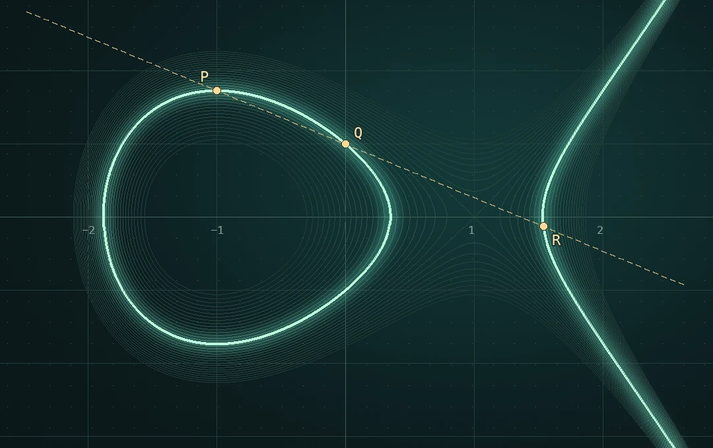

Applied cryptography
Security
research.
I'm Tim Johns. I study how cryptographic systems hold up in practice, from Bitcoin’s post-quantum transition to privacy on the network.

Research archive
8 published entriesProfile terminal
Tim Johns — I'm Tim Johns, and I graduated from Washington and Lee University in May 2026 with a bachelor's degree in Computer Science. I live in Denver, Colorado, where I work as an associate cybersecurity analyst specializing in applied cryptography. My projects draw on interests spanning cryptography, malware obfuscation, and open-source anonymity projects like Tor and I2P. I'm interested in topics such as digital surveillance and censorship, cyber-related threats to national security, and privacy-focused software like TailsOS and Qubes. I also enjoy learning about emerging AI/ML technologies like neuromorphic computing and artificial intelligence.
Reach me via email or GitHub. For encrypted messages, use one of the PGP keys below.